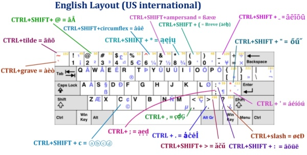

Entering European languages (which include diacritics (accented characters, diaeresis, umlauts, etc.), ligatures, the Euro sign (€), etc.) into Mozilla applications using an English keyboard doesn't have to be a pain any more: ZombieKeys brings your dead keys to life!
From Microsoft's Keyboard shortcuts for international characters (added € and ¢):
| To do this | Press |
|---|---|
| à, è, ì, ò, ù, À, È, Ì, Ò, Ù | CTRL+` (ACCENT GRAVE), the letter |
| á, é, í, ó, ú, ý, Á, É, Í, Ó, Ú, Ý; ð, Ð | CTRL+' (APOSTROPHE), the letter; d or D |
| â, ê, î, ô, û, Â, Ê, Î, Ô, Û | CTRL+SHIFT+^ (CARET), the letter |
| ã, ñ, õ, Ã, Ñ, Õ | CTRL+SHIFT+~ (TILDE), the letter |
| ä, ë, ï, ö, ü, ÿ, Ä, Ë, Ï, Ö, Ü, Ÿ | CTRL+SHIFT+: (COLON), the letter |
| å, Å | CTRL+SHIFT+@, a or A |
| æ, Æ; œ, Œ; ß | CTRL+SHIFT+&, a or A; o or O; s |
| ç, Ç | CTRL+, (COMMA), c or C |
| ø, Ø, ¢ | CTRL+/, o or O or c |
| ¿ | CTRL+SHIFT+ALT+? |
| ¡ | CTRL+SHIFT+ALT+! |
| € | CTRL+ALT+E |
| The Unicode character for the specified Unicode (hexadecimal) character code. For example, to insert the euro currency symbol (€), type 20AC, and then hold down the ALT key and press X. | The character code, ALT+X |
| The Windows-1252 character for the specified (decimal) character code.For example, to insert the euro currency symbol (€), hold down the ALT key and press 0128 on the numeric keypad. | ALT+the character code (on the numeric keypad) |
Zombiekeys can do a lot better than the Microsoft shortcuts above; a lot more european diacritics have been added:

The full list of layouts (and bigger diagrams) is here.
The quickest way to contact me (apart from filing a bug report) just click the yellow button "Mail to Axel" at the bottom to send an email
QuickFolders
(Thunderbird / Postbox) takes the pain out of working with many mail folders; has currently 22,000 daily users and the top rated message reading extensions.
quickFilters (Thunderbird) Quickly generate mail filters on the fly, by dragging and dropping mails and analyzing their attributes.
SmartTemplate4
(Thunderbird) SmartTemplate4 offers an easy way to customize Thunderbirds default quote header by using templates. Templates can be created for every account as well as for global settings.
QuickPasswords for Firefox / SeaMonkey;
QuickPasswords for Thunderbird / Postbox
this is a very neat and quick way to retrieve and use a growing number
of passwords, without displaying them on screen or having to re-type them.
Also supports renaming of multiple passwords!